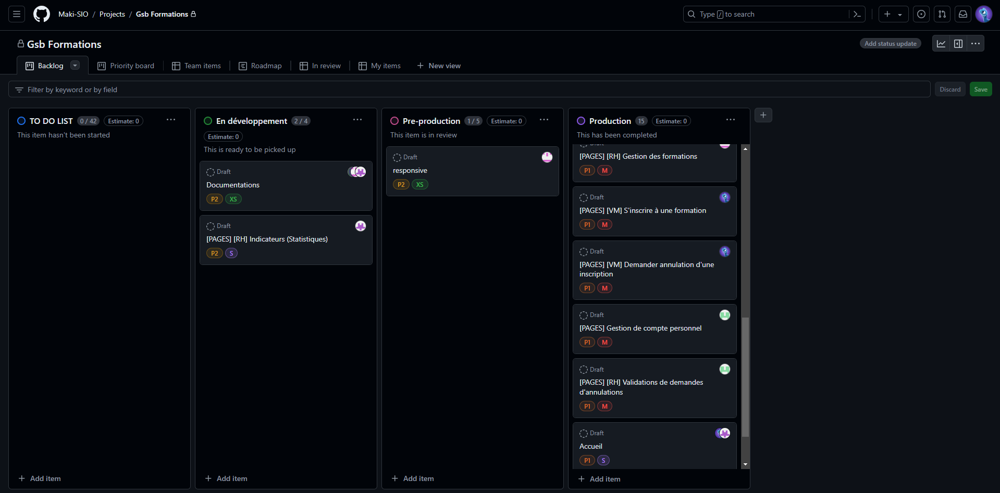
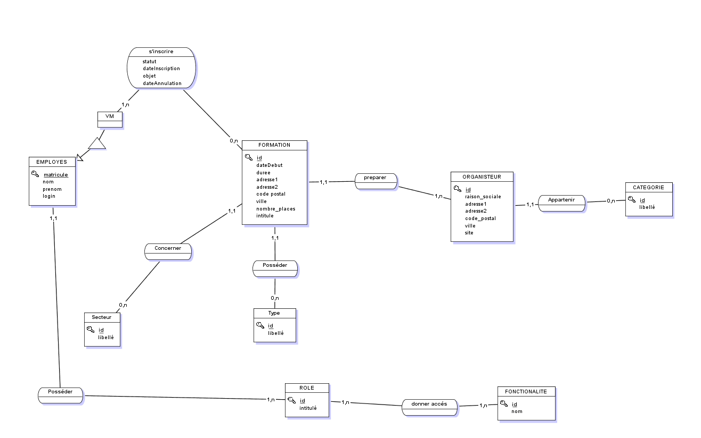
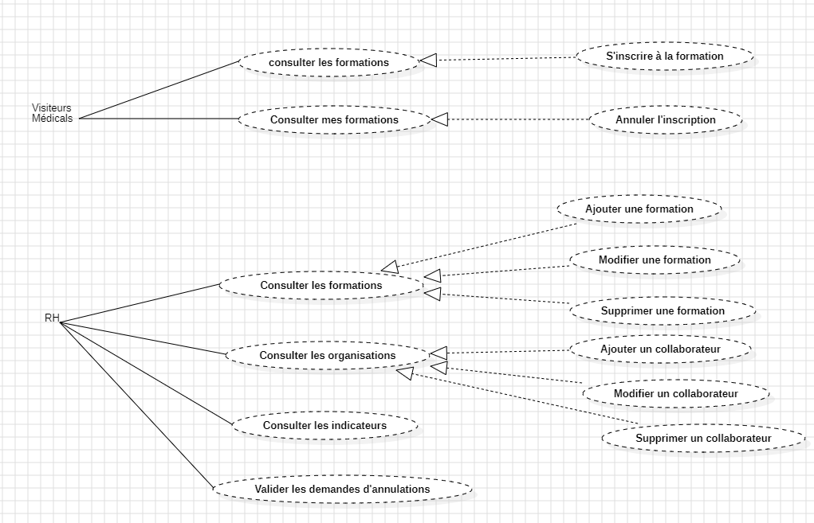

Fournir une application web pour la gestion des formations des laboratoires
GSB
Navigateur WEB
Visual Studio Code
Github
Tableau Kanban

Modèle Conceptuel de Données de l'application

Cas d'utilisation de l'application
